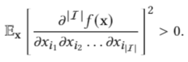
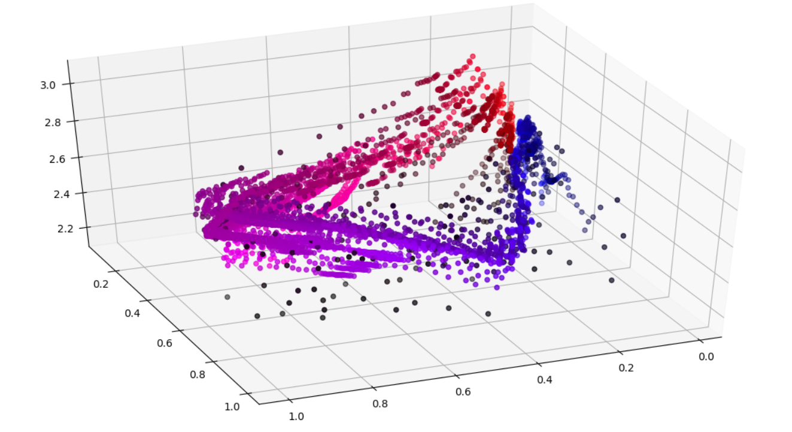

Research Statement
I want to further investigate deep learning
from a statistical machine
learning perspective. I want to better understand:
- The dynamics of training while using gradient descent methods on deep networks.
- The representative power of networks using particular architectures and specific datasets.
- Creating reasonable interpretations of decisions and predictions made by machine learning models for both field experts and novices.
In particular, I want to assess the interplay between training and validating and how the assumptions
we originally make align with the studied regimes of neural networks.
I believe these questions are fundamental to every nonconvex model we use and this path is key
to unlocking new potential of deep models' already incredible functionality.
Because I am interested in deep learning at such a fundamental level, I am interested in a
very broad array of application fields ranging across computer vision, climate science, computational biology, and deep reinforcement learning.
I am especially interested in methodologies which incorporate the structure of the data into the structure of the model
(e.g. convolutional networks, phsyics-informed machine learning, graph neural networks, etc.)
Current Directions
One of the main things I am currently studying are "Feature Interactions" which I believe to be one of the best statistical frameworks to study interpretability for deep learning. A feature interaction broadly describes a situation where two features are simultaneously important for a prediction (e.g. "not" and "good" for the sentiment of "that movie was not good.") In my opinion, this situation describes the vast majority of real world data. This framework rigorously formalizes a nonadditive interaction and lends itself to a new (and in my opinion better) way of explaining the decisions made by deep neural networks. Consequently, there are many research directions emerging from this field for better machine learning interpretation methods, redesigning neural network architectures for better performance, and new insights for modelling epistasis in gene sequencing. One of the ways I am currently applying this is using randomized experiment data to evaluate the impact and fairness of a learned model.
 Previous Publications
Hierarchical Classification with Confidence using Generalized Logits
(ICPR-2021)
Hierarchical Semantic Labeling with Adaptive Confidence
(ISVC-2019)

Combinatorics Research Projects
The Perfect Shuffle (Combinatorics) (Summer 2019)
Signed Symmetric Chromatic Polynomial (Graph Theory) (Summer 2018)